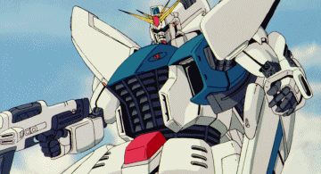
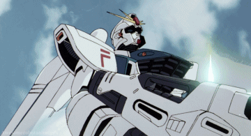
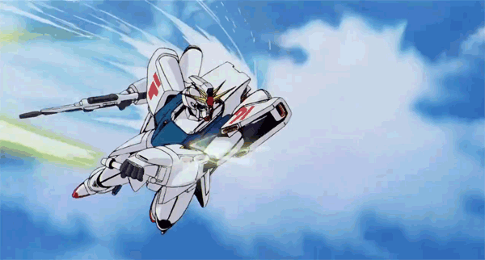

The Details
30 years after Nu Gundam in Char's Counterattack,
Gundam F91
would emerge as the next main Gundam. Seabook Arno would pilot this new mobile suit to fend off the Crossbone Vanguard so peace can continue after years of bloodshed had occurred.